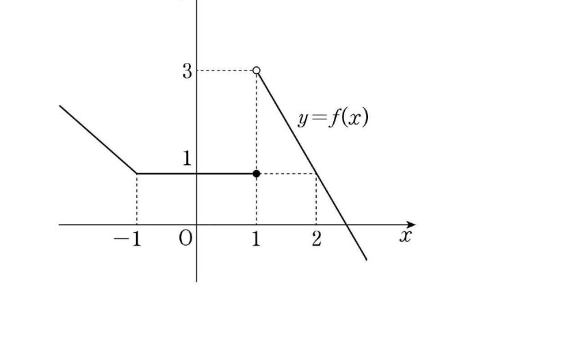

2026학년도 2학기 | 미적분 I
강의실 천장에 매달린 식물의 키, 자라나는 동안 시간에 따라 한 번도 끊어지지 않고 부드럽게 변한다. 반면 매달 받는 용돈은 매월 1일에 불쑥 값이 바뀐다.
[개방형 발문] 두 변화의 결정적 차이는 무엇일까? 함수 그래프로 그렸을 때 어떻게 다르게 보일지 자유롭게 적어 보자.
[연결] 1~4차시에서 우리는 극한값 \(\lim_{x \to a} f(x)\)과 함숫값 \(f(a)\)이 서로 다를 수 있다는 사실을 배웠다. 오늘은 이 둘이 같을 때(\( \lim_{x \to a} f(x) = f(a) \))를 함수가 \(x=a\)에서 "연속"이다라고 부르기로 약속한다. 단 한 줄의 정의 안에 지난 4차시의 모든 학습이 압축되어 있다.
함수 \(f(x)\)가 실수 \(a\)에 대하여 다음 세 가지 조건을 모두 만족시킬 때, \(f(x)\)는 \(x=a\)에서 연속(continuous)이라 한다.
한 줄 요약: 세 값 \(f(a)\), 좌극한, 우극한이 모두 존재하고 한 값으로 일치해야 연속. 셋 중 어느 하나라도 어긋나면 불연속이다. (비상 미적분 I P.32 · 함수의 연속 정의 참고)
세 조건 중 어느 것이 깨졌는가에 따라 불연속의 모습이 달라진다.
① 점프 불연속
좌극한 \(\neq\) 우극한.
극한 자체가 존재하지 않음.
예: \(f(x) = \dfrac{|x|}{x}\) (\(x=0\))
② 제거 가능 불연속
극한은 존재하지만 \( \lim f \neq f(a) \).
한 점만 "튀어 있다".
예: 비상 P.31 \(g(x)\) 케이스
③ 무한 불연속
극한이 \(\pm\infty\)로 발산.
점근선을 가진 모양.
예: \(f(x) = \dfrac{1}{x-a}\)
함수 \(f(x)\)가 어떤 열린구간에 속하는 모든 \(x\)에서 연속이면 \(f(x)\)는 그 구간에서 연속이라 한다.
닫힌구간 \([a, b]\)에서 정의된 \(f(x)\)가 다음 두 조건을 모두 만족할 때 \([a, b]\)에서 연속이라 한다.
주의: 끝점에서는 한쪽 극한(우극한 또는 좌극한)만 일치하면 충분. 구간 바깥은 정의되어 있지 않으므로 양쪽 극한을 요구할 수 없다. (비상 미적분 I P.33 · 연속함수 정의 참고)
두 함수 \(f(x), g(x)\)가 \(x=a\)에서 연속이면, 다음 함수들도 모두 \(x=a\)에서 연속이다.
\(k \cdot f(x)\) (\(k\)는 실수)
\(f(x) \pm g(x)\)
\(f(x) \cdot g(x)\)
\(\dfrac{f(x)}{g(x)}\) (단, \(g(a) \neq 0\))
도출 근거: 극한의 사칙연산 + 연속의 정의. \( \lim_{x \to a} \{f(x) \pm g(x)\} = f(a) \pm g(a) \)이고 우변이 곧 \((f \pm g)(a)\)이므로 좌변 = 우변. (비상 미적분 I P.35 · 연속함수의 성질 참고)
🎯 응용 — 어떤 함수들이 모든 실수에서 연속인가?
상수함수와 \(y = x\)가 연속 \(\Rightarrow\) 사칙으로 빌드되는 모든 다항함수는 모든 실수에서 연속. 또 두 다항함수 \(f, g\)의 유리함수 \(\dfrac{f}{g}\)는 \(g(x) \neq 0\)인 모든 \(x\)에서 연속.
세 조건을 직접 점검하여 연속/불연속을 판정하는 단계
미정계수를 결정하여 연속이 되도록 만드는 단계
"틀려야 는다!" 극한 존재 \(\neq\) 연속 오개념 정면 대응
많은 학생이 분자 \(x^2 - x = x(x-1)\)을 보고 곧장 약분하려 한다. 그러나 분모는 절댓값 \(|x-1|\)이므로 부호 처리가 필요하다.
\(x \gt 1\)일 때 \(|x-1| = x-1\), \(\dfrac{x(x-1)}{x-1} = x\) → 우극한 \(\to 1\).
\(x \lt 1\)일 때 \(|x-1| = -(x-1)\), \(\dfrac{x(x-1)}{-(x-1)} = -x\) → 좌극한 \(\to -1\).
좌·우극한이 다르므로 극한이 존재하지 않음 → 연속의 ② 조건이 깨짐 → 불연속(점프형). \(f(1)=1\)이라는 사실은 연속 판정에 아무 도움이 안 된다.
📖 출처: 수능특강 수학Ⅱ · 함수의 연속 · 유제 2 [26009-0028]
난이도 ★★★ (학습지 max+2, 7분) · 핵심: 두 점 \(x=1, x=b\)에서 동시 연속 — 두 연속 방정식 + 비물리해 거르기
핵심: 두 경계 모두에서 연속이려면 두 방정식을 동시에 만족. 차시 05의 핵심 컨셉(분기 함수의 연속)을 두 점으로 확장한 패턴. 함정은 \(b = 1\) 같은 비물리해를 답에서 제거하는 것.
📖 출처: 2021년 10월 학력평가 수학영역 공통 5번 [3점]
난이도 ★★★ (학습지 max+2, 7분) · 핵심: 그래프에서 \(x=1\)의 좌·우극한·함숫값을 읽은 뒤, 곱 함수가 연속이 되도록 한 인수가 \(0\)이 되는 미정계수를 결정

핵심: 도전 1과 동일한 "한 인수의 불연속을 다른 인수의 영점으로 흡수" 전략이지만, 본 문항은 분기식이 주어지지 않고 그래프에서 좌극한·우극한·함숫값을 직접 읽어야 한다는 점이 다르다. 그래프에서 ●(함숫값)과 ○(극한 위치)을 정확히 구분해 읽는 능력이 핵심.
스마트폰으로 우측 QR코드를 스캔하여, 아래 3가지 유형 중 하나 이상을 체크하고 통합 서술형으로 작성해 제출한다.